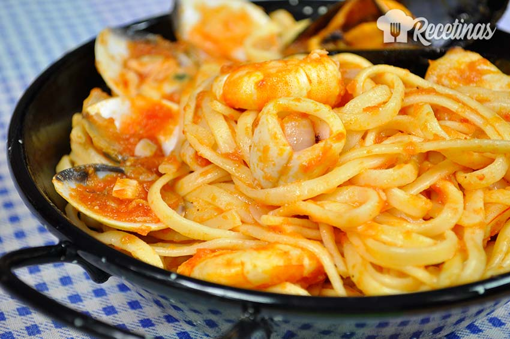

Pasta marinera

Description
An easy but extremly delicious recipe , perfect for any occasion. I'm convinced that you'll repeat this recipe! For this
recipe, you'll need 2 different pans, a medium sized pot and a garlic presser.
Ingredients
Ingredients for 2 portions.
- 250g pasta (Your prefered one)
- 100g prawns
- 200g salmon
- 200ml cream
- 20g butter
- 2 garlic cloves
- 4 spoons of olive oil
- 2 teaspoons of fresh parsley for decoration
- 1,5l of water
- A pinch of nutmeg
- Salt
- Pepper (freshly grinded if possible)
Steps
- Let's start preparing our recipe by boiling 1,5l of water in a medium sized pot.
We will prepare the rest of the ingredients while the water starts to boil. Once the water is boiling, add
250g of your favourite pasta and a pinch of salt. Check after 5 to 7 minutes to see if it's cooked.
- In one pan, we will add 20g of butter and both garlic cloves pressed. Then set the temperature
to a medium heat. Once the garlic looks brownish, it will be ready for the next step.
- When the garlic looks ready, add 200ml of cream to it, and set the temperature to low.
- In a different pan, we'll add 2 spoons of olive oil and set the temperature to high. Grill the
100g of prawns in this pan while the garlic is being grilled too.
- Once the praws are sligthly grilled, move them to the pan with the garlic and the cream to let
them finish cooking in the cream. The cream will also reduce and get thicker.
- In the pan where we grilled the prawns, add (if necessary) another 2 teaspoons of
olive oil and set the temperature to medium. Once it's warm enough, put the salmon in the pan and grill it. It will
need about 6-8 minutes per side, depending on the thickness.
- At this poin, the pasta should be ready and stirred out of water.
- When the salmon is cooked, cut it into dices about the size of a bite and move it into the cream sauce.
- Add Salt,Pepper and nutmeg to the cream sauce.
- And finally, if the pasta is cold, you can warm it up in the pan where you grilled the salmon, adding a bit
of butter if neccesary.
- Put the pasta on a dish, add the sauce on top and decorate it adding 1 teaspoon of
parsley.
Back to mainsite